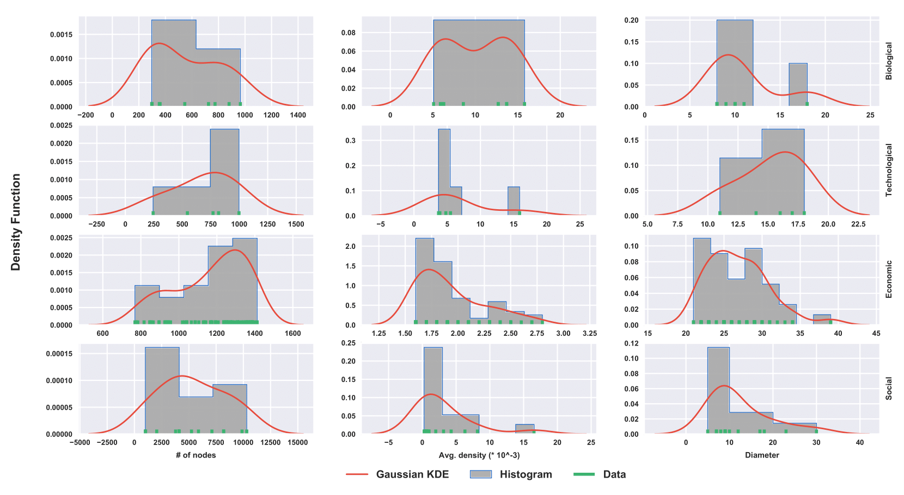

GEM-Benchmark¶
Unlike other fields with well established benchmark datasets (e.g. community detection), the graph embedding community has adopted an ad-hoc approach to evaluate new methods. Typically, graph embedding methods are evaluated on only a few real networks, and these are biased towards specific properties. This ad-hoc evaluation approach restricts us from understanding how the algorithm would behave if we vary a certain property of the graph, or how the algorithm performs on other types of graphs. In order to propose a more rigorous evaluation approach, we must first to understand the key attributes that govern the performance of graph embedding methods. First, the size of the graph (A1) is a challenge for any method. Real graphs vary in the number of nodes, from a few hundred to millions of nodes. Different methods make different assumptions on how to capture the higher order proximities and structural dependencies between nodes, and this greatly affects their scalability. Second, the density of the graph (A2) plays an important role in defining its structure. Lower density results in lesser information about the nodes which may hamper the performance of some methods. Third, the dimension of the embedding (A3) determines how concisely the method can store the information about a given graph. Higher dimension of the embedding may lead to overfitting of the graph whereas lower dimension of the embedding may not be enough to capture the information the graph provides resulting in underfitting. Fourth, the evaluation metric (A4) used to evaluate the method captures different aspects of the prediction. Global metrics are often biased towards high degree nodes whereas local metrics can be biased towards lower degree nodes.
In this benchmark libary, we take the first step towards establishing a graph embedding benchmark. We propose a benchmark evaluation framework to answer the following questions:
Q1: How does the performance of embedding methods vary with the increasing size of the graph?
Q2: How does increasing the density of graph affect the model?
Q3: How does the optimal embedding dimension vary with an increasing number of nodes in the graph?
Q4: How does the performance vary with respect to the evaluation metric?
To address the above questions, we introduce a suite of 100 real graphs and vary the above attributes (A1, …, A4) in the graphs and the embedding methods. Varying the size of the graph (A1) in terms of number of nodes answers the first question (Q1) and helps us understand which methods are best when used in small, medium, and large graphs. Similarly, varying the density of the graph (A2) in terms of the average degree of nodes helps us understand its effect in the embedding performance. This answers the second question (Q2). Furthermore, varying the dimension of the embedding (A3) helps us draw insights into the information compression power of the embedding approach. This answers the third question (Q3). Finally, by varying the evaluation metrics (A4) we can analyze the performance sensitivity of the method and can help us infer the bias of the embedding method towards specific nodes int he graph. This answers the fourth question (Q4).
Real Graphs¶
We propose a novel data set containing 100 real world graphs from four domains: social, biology, economic, and technological. To demonstrate the usefulness of this benchmark, we evaluate eight graph embedding methods and measure their performance. This provides valuable insights about every method and their sensitivity to different graph properties. This paves the way towards a framework that can be used to recommend the best embedding approaches for a given graph with a unique set of properties.
{kind=link}
The above figure summarizes the main properties of the graphs from different domains in the data set. We observe that economic graphs have a lower average density varying between 0.00160 and 0.00280 with a higher number of nodes concentrated in lower density spectrum. Technological and social graphs are denser with an average density between 0.0030 to 0.0160. It is interesting to note that despite the wide average density range densities are concentrated primarily in the lower and higher values with a gap in between. Biological graphs have an almost uniform distribution of densities ranging from 0.005 to 0.0155.
Next, we observe the domain-wise pattern of diameters. Economic graphs have the widest range(20 - 40) and the highest values of diameters which justifies the lowest average densities observed. Technological graphs with diameter ranges between 11 and 17.5 are less sparse when compared with economic graphs. Biological graphs have a good combination of both dense and sparse graphs with a majority of graphs lying in small diameter range. Biological graphs typically have short long diameter ranges as (8 to 12) and (16 to 18) respectively. Social graphs have in general a lower diameter around 10 although some of them have higher diameters.
On further investigation, we observe that biological networks have the highest clustering tendencies with an average clustering coefficient as 0.10. However, economic graphs stand in absolute contrast to them with very low clustering coefficient of 0.00016 as the highest recorded average clustering coefficient. Technological networks are somewhere in between the aforementioned extremes with 0.03 as the highest recorded average clustering coefficients. Clustering tendencies can be sought to have a high correlation with average density and diameter observations.
Note that these 100 graphs include a very diverse set of graphs in terms of the size of the graph (A1) ranging from 200 to 1500 nodes, and in terms of the density of the graph (A2) ranging from an average density between 0.0015 to 0.020. This graph diversity is helpful in characterizing the performance of different embedding methods.
Evaluation Metrics¶
In the graph embedding literature, there are two primary metrics that are used to evaluate the performance of the methods on link prediction:
Precision at k (P@k) and
Mean Average Precision (MAP) These metrics are defined as follows:
P@k is the fraction of correct predictions in the top k predictions. It is defined as P@k = \frac{|E_{pred}(1:k) \cap E_{obs}|}{k},
where E_{pred}(1:k) are the top k predictions and E_{obs} are the observed edges/hidden edges.
MAP estimates the prediction precision for every node and computes the prediction average over all nodes, as follows:
MAP = \frac{\sum_i AP(i)}{|V|}
where AP(i) = \frac{\sum_k P@k(i) \cdot \mathbb{I}\{E_{pred_i}(k) \in E_{obs_i}\}}{|\{k: E_{pred_i}(k) \in E_{obs_i}\}|},
P@k(i) = \frac{|E_{pred_i}(1:k) \cap E_{obs_i}|}{k},
and E_{pred_i} and E_{obs_i} are the predicted and observed edges for node i respectively.
Intuitively, P@k is a global metric that measures the accuracy of the most likely links predicted. On the other hand, MAP measures the accuracy of prediction for each node and computes their average. These metrics are often uncorrelated and reflect the properties captured by the prediction method at different levels (MAP on local level and P@k on global level). In this benchmark library, we present results using both these metrics to analyze each approach.
GFS-score¶
We now define a set of scores to evaluate a graph embedding model on our data set. The scores are divided into components to draw insights into a method’s approach across domains and metrics. We further plot the metrics varying various graph properties to understand the sensitivity of the models to these properties.
Given a set of graph domains \mathcal{D}, a set of evaluation metrics \mathcal{M} and evaluation function e_m (graph, approach) for m \in \mathcal{M}, we define GFS-score for an approach a as follows:
micro-GFS-m(a) = \frac{ \sum_{g \in \mathcal{G}} (e_m(g, a)/e_m(g, random)) }{|\mathcal{G}|}
macro-GFS-m(a) = \frac{\sum_{d \in \mathcal{D}} GFS-m(d, a)}{|\mathcal{D}|}
GFS-m(d, a) = \frac{ \sum_{g \in \mathcal{G}_d} (e_m(g, a)/e_m(g, random)) }{|\mathcal{G}_d|}
where \mathcal{G}_d is the set of graphs in domain d.
The GFS-score is a robust score which averages over a set of real graphs with varying properties. It is normalized in order to ascertain the gain in performance with respect to a random prediction. The domain scores provide insights into the applicability of each approach to the different graph categories.
Link Prediction Baselines¶
Our link prediction baselines were selected to showcase the utility of embedding approaches on real graphs and establish the ground truth for comparison between the state-of-the-art methods. The link prediction baselines are:
Preferential Attachment :is based on the assumption that the connection to a node is proportional to its degree. It defines the similarity between the nodes as the product of their degrees.
Common Neighbors: defines the similarity between nodes as the number of common neighbors between them.
Adamic Adar: is based on the intuition that common neighbors with very large neighbourhoods are less significant than common neighbors with small neighborhoods when predicting a connection between two nodes. Formally, it is defined as the sum of the inverse logarithmic degree centrality of the neighbours shared by the two nodes.
Jaccards Coefficient: measures the probability that two nodes i and j have a connection to node k, for a randomly selected node k from the neighbors of i and j.
Embedding Approaches¶
We illustrate the benchmark data set on four popular graph embedding techniques to illustrate the utility of the benchmark and rank the state-of-the-art embedding approaches. The techniques preserve various properties including local neighborhood, higher order proximity and structure.
Laplacian Eigenmaps : It penalizes the weighted square of distance between neighbors. This is equivalent to factorizing the normalized Laplacian matrix.
Graph Factorization : It factorizes the adjacency matrix with regularization.
Higher Order Proximity Preserving (HOPE): It factorizes the higher order similarity matrix between nodes using generalized singular value decomposition.
Structural Deep Network Embedding (SDNE) : It uses deep autoencoder along with Laplacian Eigenmaps objective to preserve first and second order proximities.